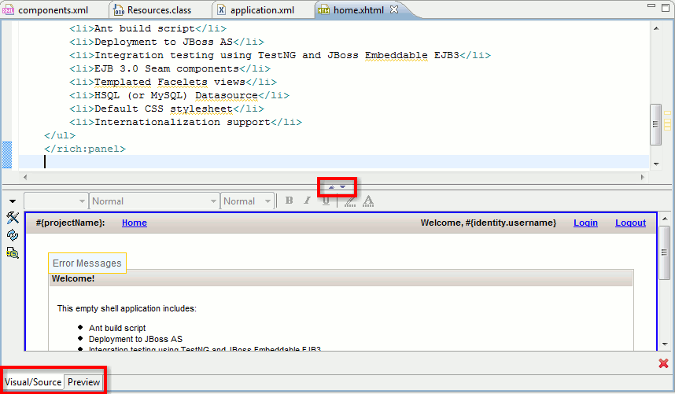

Editor |
|
The Visual Page Editor now has a splitpane with toggle buttons for quickly moving between source, visual or source/visual modes instead of multiple tabs.  You can use shift-F6 and alt-shift-F6 as shortcuts to toggle between the various states of the splitpane. Tip: When editing large documents hiding the visual part will speed up editing |
|